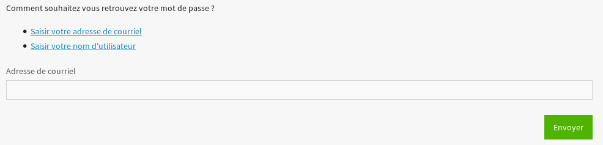

La désinscription se fait via l’interface utilisateur.
Le lien de désinscription est accessible via paramètres (/membres/parametres/profil/) puis “Se désinscrire” dans la barre
latérale (/membres/desinscrire/avertissement/) :
Position du lien de désinscription dans les paramètres du membre (/membres/parametres/profil/)
Le lien mène alors vers une page expliquant les conséquences de sa désinscription. Il peut alors poursuivre via un bouton en bas de celle-ci :
Le clic sur « Me désinscrire » entraîne alors une série d’action (qui sont irréversibles) :
Suppression du profil, libérant le pseudo et l’adresse courriel pour les futures inscriptions ;
Le membre est déconnecté ;
Les données du membre sont anonymisées :
le pseudo anonymous est employé :
pour les sujets du forum (qui, cependant, restent ouverts)
pour les messages des MP (le membre quitte les discussions auxquelles il participait) ;
pour les commentaires aux tutoriels et articles ;
les galeries non liées à un tutoriel sont données à external (puisque l’image peut être considérée comme venant d’un “auteur”) avec droit de lecture et d’écriture ;
si le tutoriel/article a été écrit par plusieurs personnes : le membre est retiré de la liste des auteurs ;
si le tutoriel/article est publié, il passe sur le compte “external”. Une demande expresse sera nécessaire au retrait complet de ces contenus ;
si le tutoriel/article n’est pas publié (brouillon, bêta, validation), il est supprimé, ainsi que la galerie qui lui est associée.
Les membres dans les environnement de test et de développement
Afin de faciliter les procédures de test en local, 8 utilisateurs ont été créés via la fixture users.yaml (utilisateur/mot de passe):
user/user : utilisateur normal
staff/staff : utilisateur avec les droits d’un staff
admin/admin : utilisateur avec les droits d’un staff et d’un admin
anonymous/anonymous : utilisateur qui permet l’anonymisation des messages sur les forums, dans les commentaires d’articles et de tutoriels ainsi que dans les MP
external/external : utilisateur qui permet de récupérer les tutoriels d’anciens membres et/ou de publier des tutoriels externes.
ïtrema/ïtrema : utilisateur de test supplémentaire sans droit
decal/decal: un compte qui possède un identifiant Profile différent de l’identifiant user pour permettre de tester le cas où ces identifiants sont différents
dev/dev : utilisateur dans le groupe des développeurs
Pour que ces membres soient ajoutés à la base de données, il est donc nécéssaire d’exécuter la commande suivante, à la racine du site :
python manage.py loaddata fixtures/users.yaml
Attention
Les utilisateurs anonymous et externaldoivent être présents dans la base de données pour le bon fonctionnement du site.
En effet, ils permettent le bon fonctionnement du processus d’anonymisation (voir plus haut)
Les utilisateurs anonymous et external sont totalement paramétrables dans le fichier zds/settings.py :
pour changer le nom d’utilisateur (username) de ces comptes, agissez sur les constantes suivantes (du dictionnaire ZDS_APP):
# Constant for anonymisationanonymous_account="anonymous"external_account="external"
Bien entendu, les comptes correspondants doivent exister dans la base de données.
Afin de pouvoir gérer les membres directement depuis le site (c’est-à-dire sans avoir besoin de passer par l’interface d’administration de Django), une interface de promotion a été développée. Elle est accessible aux membres ayant le statut de super-utilisateur via un lien présent sur tous les profils.
Cette interface permet :
1. D’ajouter/supprimer un membre dans un/des groupe(s)
2. De (dés)activer un compte
Le premier point permet notamment de passer un membre dans le groupe staff ou développeur. Si d’autres groupes venaient à voir le jour (validateur par exemple), alors il sera possible ici aussi de le changer.
Le second point concerne simplement l’activation du compte (normalement faite par le membre à l’inscription).
Elle est gérée par le formulaire PromoteMemberForm présent dans le fichier zds/member/forms.py.
Elle est ensuite visible via le template member/settings/promote.html.
Le profil de chaque membre contient également un lien vers l’administration de Django si l’utilisateur connecté y a accès et est super-utilisateur. Cela permet de nommer un membre super-utilisateur ou de lui donner l’accès à l’administration.
Les casquettes sont un moyen de certifier qu’un utilisateur a un rôle particulier (comme membre du staff, développeur, etc). Les casquettes d’un membre sont listées sur son profil et il est également possible lors de l’envoi d’un message de le poster avec une casquette particulière, qui sera mise en avant sur le message.
Il est possible de modifier la casquette d’un message en l’éditant. Seules les casquettes possédées par le membre lors de l’édition peuvent être sélectionnés. Lorsqu’une casquette est retirée à un membre, les messages ayant été postés avec cette casquette la conservent. Cependant, il est obligatoire de modifier (ou de supprimer) la casquette d’un message s’il est édité alors que le membre ne la possède plus.
Les casquettes peuvent être accordées de trois manières :
Par ajout direct depuis le profil du membre. Cette opération peut être accomplie par les utilisateurs ayant la permission utils.change_hat.
Sur demande de l’utilisateur : il est possible pour un membre d’envoyer une demande depuis les paramètres de son compte en spécifiant la casquette demandée et une justification écrite en Markdown. Les demandes peuvent être acceptées ou refusées par les membres ayant la permission utils.change_hat.
Par ajout à un groupe dont fait partie le membre : il est possible, depuis l’administration de Django, de lier une casquette à un groupe, ce qui l’accordera automatiquement à tous ses membres. À noter que lier une casquette à un groupe empêche toute assignation individuelle de celle-ci à un membre. Ainsi, la dite casquette ne pourra plus être attribuée à un membre n’appartenant pas au groupe. De même, les membres du groupe ne pourront pas la supprimer sans quitter le groupe.
Les membres peuvent supprimer eux-mêmes leurs casquettes. Les utilisateurs ayant la permission utils.change_hat peuvent supprimer les casquettes de tout le monde, à condition qu’elles n’aient pas été accordées à un groupe.
Attention : la casse est déterminée lors du premier ajout d’une casquette. Ainsi, si vous ajoutez une casquette « Staff » à un membre, ajouter une casquette « staff » à un autre membre par la suite lui ajoutera en réalité la casquette « Staff ». Si nécessaire, la casse d’une casquette peut être modifiée via l’administration de Django.
Les casquettes sont ajoutées aux MP automatiques en fonction des paramètres ZDS_APP['hats'] renseignés dans le fichier settings.py.
Pour pouvoir communiquer entre modérateurs, il est utile d’avoir un outil de suivi sur les membres. Ce dernier prend forme via la gestion du « karma » d’un membre. Le karma est une valeur numérique pouvant aller de -100 à +100. Cette valeur peut-être modifiée via l’ajout de bonus/malus par les modérateurs. Chaque modification du karma doit s’accompagner d’un commentaire, mais un commentaire n’entraîne pas forcément une modification du karma (0 point de bonus/malus).
Cet outil à deux rôles. Permettre d’identifier les membres perturbateurs mais aussi les membres moteurs qui pourrait faire l’objet d’un article ou d’une mise en avant de leurs projets.
Pour modifier le karma d’un membre, il faut donc être modérateur sur le site. Sur le profil d’un membre apparaît alors un formulaire pour ajouter un bonus/malus et la liste des modifications précédentes montrant l’impact (+/-), le message, l’auteur du bonus/malus et la date d’effet de ce dernier.
Lorsqu’un membre change de pseudo, une note de karma (de 0 point) est automatiquement ajoutée à son profil en faisant mention de son ancien et de son nouveau pseudo (afin de garder une tracabilité pour les membres du staff).
Quand un membre du site oublie son mot de passe, il peut le réinitialiser. L’ancien mot de passe est supprimé et l’utilisateur peut en choisir un nouveau.
Pour cela, il se rend sur la page de réinitialisation de mot de passe (membres/reinitialisation/) à partir de la page de connexion.

Sur cette page, l’utilisateur doit rentrer son pseudo ou l’adresse de courriel associée à son compte.
Quand l’utilisateur clique sur le bouton de validation, un jeton est généré aléatoirement et est stocké dans la base de données.
Un message est envoyé à l’adresse de courriel de l’utilisateur. Ce courriel contient un lien de réinitialisation. Ce lien contient en paramètre le jeton de réinitialisation et dirige l’utilisateur vers l’adresse membres/new_password/.
Cette page permet de changer le mot de passe de l’utilisateur. L’utilisateur remplit le formulaire et clique sur le bouton de validation.
Si le mot de passe et le champ de confirmation correspondent et que le mot de passe respecte les règles métiers, le mot de passe est changé.
Le système affiche un message de confirmation du changement de mot de passe.
Attention
Il n’existe aucune restriction sur le nombre de demande de réinitialisation.
Un utilisateur peut avoir le même nom d’utilisateur que l’adresse email de quelqu’un d’autre. Exemple:
Le lien est valable une heure. Si l’utilisateur ne clique pas sur le lien dans le temps imparti, un message d’erreur est affiché.
Le jeton de réinitialisation de mot de passe n’est valide qu’une seule fois. Si l’utilisateur tente de changer son mot de passe avec le même jeton, une page 404 lui est affichée.